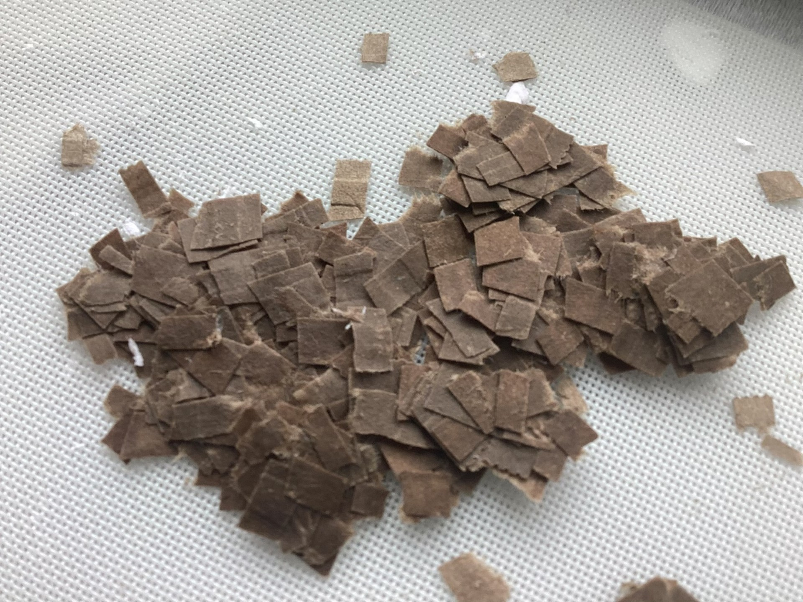
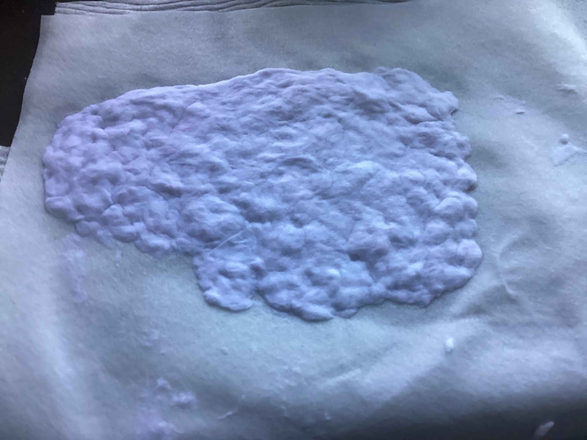
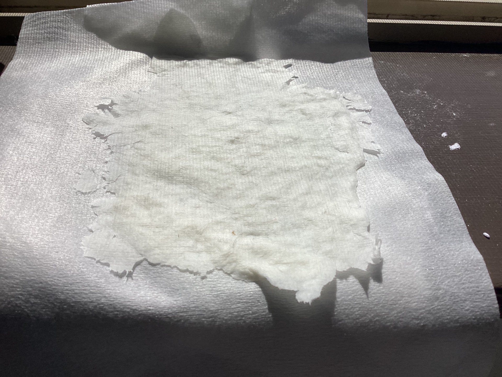

Our Daily Paper
Paper is everywhere in our daily lives. We use notebooks for writing, tissues for hygiene, cardboard boxes for packaging, and paper bags for shopping. Most paper is made from wood.
Paper is an incredibly versatile material that plays an essential role in our everyday lives. We encounter numerous types of paper products daily, including notebook paper for writing and drawing, soft tissues for personal hygiene, sturdy cardboard boxes for packaging and shipping, and convenient paper bags for carrying groceries and other items. The vast majority of these paper products are manufactured using wood as the primary raw material, typically sourced from sustainably managed forests and tree plantations.
🏛️ History Timeline
Paper was invented in China by Cai Lun. He used mulberry bark, hemp, and old rags to make the first paper.
Paper was invented in China by Cai Lun during the Han Dynasty. He developed an innovative method using mulberry bark, hemp fibers, and old rags to create the first true paper. This revolutionary invention quickly spread throughout China and became the primary medium for writing, replacing bamboo slips and silk as the dominant materials for recording information and artistic expression.
After the Battle of Talas, papermaking spread to the Islamic world. Islamic artisans improved the techniques and built paper mills across the Middle East.
The Battle of Talas in Central Asia played a crucial role in spreading papermaking technology to the Islamic world. After capturing Chinese papermakers, the Abbasid Caliphate adopted and refined the techniques, establishing paper mills across the Middle East and North Africa. Islamic artisans improved the production methods and created higher-quality paper that eventually influenced European papermaking traditions.
Papermaking reached Europe through Spain and Italy. It replaced expensive parchment, making books cheaper and more accessible.
Papermaking technology reached Europe through Spain and Italy, primarily transmitted by Islamic scholars and merchants. The arrival of paper revolutionized European communication and record-keeping systems. As paper mills spread throughout the continent, it gradually replaced expensive parchment and vellum, making books and documents more affordable and accessible to a broader population.
Gutenberg's printing press massively increased the demand for paper, leading to larger mills and mass production.
Johannes Gutenberg's invention of the movable type printing press dramatically increased the demand for paper throughout Europe. This technological breakthrough required vast quantities of paper to produce books and printed materials efficiently. In response, papermakers developed mass production techniques and built larger mills, setting the stage for the modern paper industry.
Wood pulp methods made paper much cheaper, allowing mass production using trees instead of expensive materials.
The development of wood pulp paper production methods revolutionized the industry and made paper significantly cheaper and more accessible worldwide. New chemical processes for separating cellulose fibers from wood allowed manufacturers to produce paper on an industrial scale using abundant timber resources, dramatically reducing costs and enabling mass literacy and communication.
Modern papermaking uses recycling and sustainable forestry to protect the environment while meeting global demand.
Modern paper production has evolved to incorporate sustainable practices and extensive recycling programs to protect our precious forest ecosystems. Contemporary paper mills utilize renewable energy sources, practice responsible forestry management, and recycle vast amounts of paper products to minimize environmental impact while meeting global demand for this essential material.
🌳 What's Inside Trees?
Trees have long, thin fibers inside them made of cellulose. Cellulose is a natural material that is strong and flexible. These fibers tangle together to make paper.
Trees contain remarkable microscopic structures that make them excellent for paper production. Inside the wood, there are countless long, thin plant fibers that serve as the building blocks for paper. These fibers are composed primarily of cellulose, a natural organic polymer that provides exceptional strength and flexibility to the material. The cellulose molecules act like countless tiny threads that can intertwine and bond together, creating the durable yet flexible properties that we rely on in paper products.
💡 The Paper Making Process
Paper is made by: 1) Breaking plant fibers apart, 2) Mixing them with water to make pulp, 3) Spreading the pulp flat on a screen to drain water, 4) Pressing and drying it into sheets.
The fundamental process of papermaking involves transforming raw plant materials into thin, flat sheets through several essential steps. First, manufacturers break apart the plant fibers to separate them from their natural structure. These fibers are then thoroughly mixed with water to create a fibrous suspension known as pulp. The pulp is carefully spread flat across a fine mesh or screen, allowing the water to drain away while the fibers remain evenly distributed. Finally, the wet fiber mat is pressed and dried, removing all remaining moisture. The specific arrangement and density of these fibers during the drying process ultimately determines the final strength, texture, and quality characteristics of the finished paper.
🔬 Process Steps
Break Fibers
Separate plant fibers from wood chips or recycled paper by grinding or chemical processing.
The process begins by separating individual plant fibers from raw materials such as wood chips, recycled paper, or plant fibers. This can be accomplished through mechanical grinding or chemical processing, depending on the desired paper quality and application.
Make Pulp
Mix the fibers with lots of water. This watery mixture is called pulp.
The separated fibers are thoroughly mixed with large quantities of water to create a fibrous suspension called pulp. This watery mixture allows the fibers to flow freely and distribute evenly, which is essential for producing consistent paper sheets with uniform thickness.
Spread & Press
Pour pulp onto a mesh screen. Water drains through and fibers settle into an even mat, then it gets pressed.
The pulp slurry is carefully poured onto a fine mesh screen or forming fabric. As the water drains through the mesh, the fibers settle into an even mat that will become the paper sheet. This wet mat is then pressed between rollers to remove excess water and compact the fibers together.
Finish Paper
Dry the pressed paper with heat. The fibers bond together to make strong paper.
The pressed paper passes through heated drying cylinders or through large drying ovens to evaporate any remaining moisture. During this final stage, the fibers bond together through hydrogen bonding, creating the characteristic strength and integrity of paper products.
📋 Different Types of Paper
Paper products vary widely in their physical properties and intended applications. These differences stem from variations in fiber length, manufacturing techniques, and processing methods.
📦 Cardboard

Thick and strong. Made with long fibers tightly packed together. Great for boxes.
Cardboard is a thick, sturdy material characterized by its exceptional strength and durability. Its impressive toughness results from the use of long cellulose fibers that are tightly bonded together during the manufacturing process, making it perfect for packaging applications where protection and structural integrity are essential.
📓 Notebook Paper

Medium weight with a smooth surface. Good for writing and absorbs ink well.
Notebook paper represents a carefully balanced medium-weight product designed specifically for writing purposes. It features a smooth surface texture that provides excellent writing comfort while maintaining superior ink absorption qualities.
🧻 Tissue Paper

Very soft and delicate. Uses short fibers in a loose structure. Gentle and absorbent.
Tissue paper is engineered to be exceptionally soft and delicate for gentle personal use. This softness is achieved through the use of shorter cellulose fibers arranged in a looser, more porous structure, making it gentle on sensitive skin while being highly absorbent.
🛍️ Paper Bags
A balance of strength and flexibility. Can carry items and be folded easily.
Paper bags are constructed to provide an optimal balance of durability and flexibility, utilizing medium-length cellulose fibers arranged to create sufficient strength for carrying various items while maintaining the pliability needed for folding and shaping.
🎯 Quick Quiz
♻️ Recycling & Sustainability
Different paper types recycle differently. Some papers can be recycled many times, while others become too weak after one cycle. Understanding this helps us make better choices about how we use and recycle paper.
The varying characteristics of different paper types significantly influence their recyclability and the quality of recycled materials. Fiber length and arrangement determine how easily paper can be reprocessed and what the resulting recycled paper can be used for. Some papers with very short or damaged fibers become increasingly difficult to recycle effectively, while others maintain excellent recycling potential through multiple cycles. Understanding these inherent properties helps consumers and manufacturers make informed decisions about paper usage, appropriate recycling methods, and sustainable paper management practices.